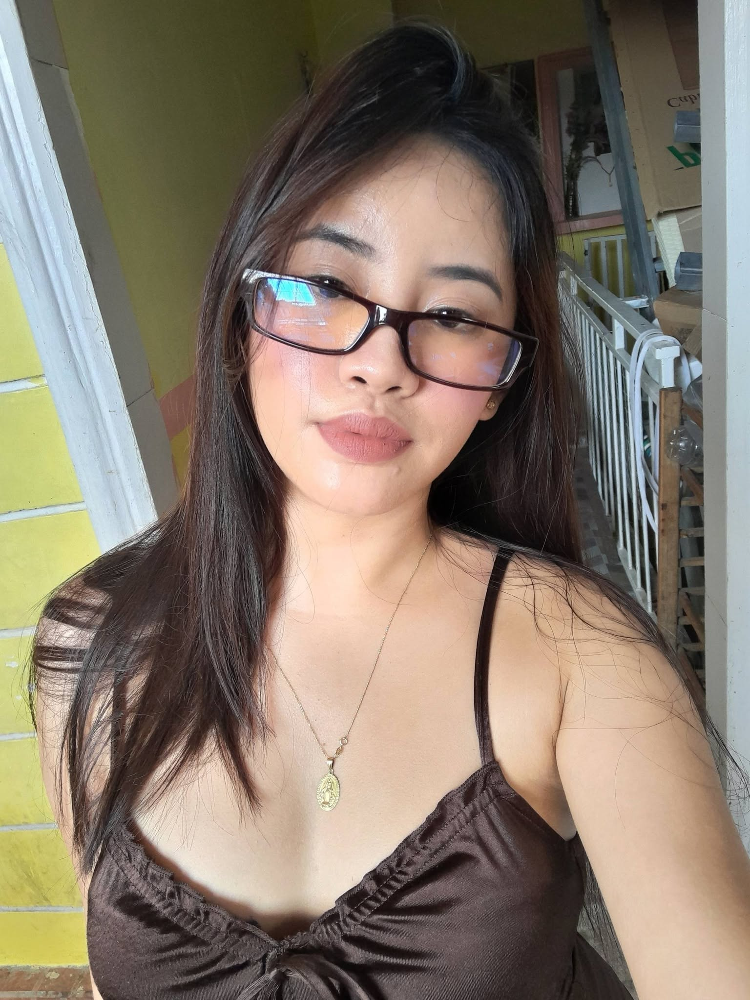

GET TO KNOW ME
About Me ♡
A little information about myself.

Hello, I'm Mae!
My name is Florna Mae C. Riobuya, but you can call me Mae for short. I'm 19 years old and currently taking Bachelor of Science in Information Technology (BSIT) at Bestlink College of the Philippines.
My favorite color is pink. I love listening to music, taking pictures, and eating my comfort food. I also love spicy foods because I enjoy food with an extra kick!
As a student, I want to learn more about technology and improve my coding skills. I know that learning something new can be challenging, but I believe that practice and patience can help me improve.
My goal is to become more confident in creating websites and completing school project.
Personal Information
| Full Name | Florna Mae C. Riobuya |
|---|---|
| Nickname | Mae |
| Age | 19 years old |
| Course | Bachelor of Science In Information Technology |
| Section | BSIT 21004 |
| School | Bestlink College of the Philippines |
| Favorite Color | Pink |